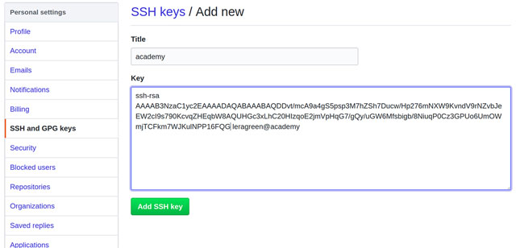

Подготовка к работе
Установка Git
- Скачайте файл инсталлятора с сайта Git и установите Git.
- Откройте терминал и введите команду
git --version. Появится информация об установленной версии Git.
Настройка Git
- Откройте терминал и выполните команды:
git config --global user.name "профиль"git config --global user.e-mail.
- Сгенерируйте SSH-ключ с помощью утилиты Putty. Подробнее см. статью "Как сгенерировать SSH-ключ для доступа на сервер".
- Откройте профиль на Github и перейдите на страницу "SSH and GPG keys".
-
Нажмите на кнопку New SSH key. Откроется страница:

-
Укажите имя ключа в поле Title.
- Вставьте ключ в поле Key.
- Нажмите на кнопку Add SSH key.
Установка Foliant и необходимых компонентов
Чтобы установить Foliant и необходимые компоненты:
- Установите Python.
-
Установите Foliant с помощью pip:
$ python -m pip install foliant foliantcontrib.init -
Установите менеджер пакетов Chocolatey.
-
Установите Pandoc с помощью Chocolatey:
choco install pandoc -
Установите MkDocs:
pip install mkdocs -
Установите MiKTeX.
- Установите nodejs.
-
Установите MdToPdf с помощью npm:
$ npm install -g md-to-pdf
Создание проекта Foliant
- В командной строке перейдите в папку, в которой будет создан проект Foliant.
-
Создайте проект:
$ foliant init -
Укажите имя проекта, например, "Hello Foliant". Появится сообщение:
Project "Hello Foliant" created in hello-foliant
Чтобы посмотреть содержимое проекта, выполните команды:
$ cd hello-foliant
$ tree
.
├── docker-compose.yml
├── Dockerfile
├── foliant.yml
├── README.md
├── requirements.txt
└── src
└── index.md
1 directory, 6 files
Проект содержит файлы и папки:
- docker-compose.yml и Dockerfile – файлы, необходимые для создания проекта в Docker;
- foliant.yml – конфигурационный файл проекта;
- README.md – файл с информацией о проекте;
- requirements.txt – список пакетов Python, необходимых для проекта: бэкенды и препроцессоры, темы для MkDocs и т.д.;
- src – папка с исходными файлами проекта. По умолчанию в папке создается файл index.xml.
Создание репозитория
Чтобы создать репозитой на https://github.com/:
- Зарегистрируйтесь или войдите в свой аккаунт на https://github.com/.
-
Нажмите на кнопку New в колонке Repositories. Откроется окно:

-
Укажите названия репозитория в поле Repository name.
- Установите переключатель Public.
- Не устанавливайте флажок Initialize this repository with a README.
- Нажмите на кнопку Create repository.
- Нажмите на кнопку Upload files и загрузите файлы проекта.